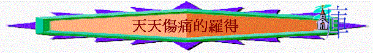

引言：
∼創12:1-5提及羅得，他是誰？
∼彼後2:6-8又提到所多瑪、蛾摩拉，誰人住在他們中間？
∼他住在他們中間是否活得十分開心？何以見得？
∼試分享你最傷痛的時間維持多久？
∼羅得為何天天傷痛？我們今日從聖經中查考
一.選擇錯誤
1.
創13:5-7當時發生了甚麼事情？
2.
一想起與人相爭你會想起甚麼新聞？人為何要與人相爭呢？
3.
在家庭/學校/工作上，有沒有曾經與人相爭？爭什麼？
4.
亞伯蘭又有甚麼回應(創13:8-9)？有甚麼值得我們效法？
5.
羅得又有甚麼選擇？為何他有這選擇(創13:10-11)？
6.
但羅得選擇的地方又有甚麼不好的地方？以致他日後住在他們中間天天傷痛？
7.
在人生中，你認為有甚麼選擇與決定，對你來說是十分重要，若選擇錯了，會有很悲哀的結果？
8.
若一信徒，他選擇以後星期六日不返教會，因為他要與朋友在六日練球，為了參加公開比賽，你聽後有甚麼感覺與回應？
二.對罪無奈
1.
創18:20-21提及所多瑪和蛾摩拉的罪嚴不嚴重？何以見得？
2.
猶7提及他們的特性甚麼？「隨從逆性的情慾」是指甚麼？
3.
創19:1-3提及甚麼事？羅得如何對待兩位天使(他之前不知道他是天使的)？
4.
創19:4-5提及所多瑪的人有甚麼回應？你認為他們想怎樣？
5.
你可以接受他們的行為嗎？為甚麼？
6.
你認為羅得會否同他們同流合污呢？(創19:6)
7.
彼後2:7-8形容羅得是甚麼人？他為什麼事憂傷？
8.
你最近有沒有為一些新聞/身邊的人行惡事而憂傷或憤怒？
9.
羅得雖然不會像所多瑪的人行如此惡，但創19:6-8，他做了甚麼事情？你認同他的處理手法嗎？為甚麼？
10.
若今天，有一信徒在工作環境中發現上層員工有違法行為，而上層也要求員工參與，你認為他可以有那幾種回應與行動？
11.
你若是其中一位員工，你又有甚麼立場？為甚麼？
三.遲遲不走
1.
既然羅得住在他們中間，見他們的惡行而憂傷，他為何不走，離開惡人環境？試猜想？
2.
創19:12-13，天使(二人)對羅得有甚麼警戒？
3.
創19:15-16，羅得又有甚麼回應？
4.
若一信徒對導師說：「我發現自己有一軟弱/罪惡/壞習慣/不好品性，神想我離開的」但他知道後仍遲遲不離開，你認為他為何有這表現？你若是他的好弟兄/好姊妹，你又怎勸他呢？
總結：羅得雖然是一個義人，但他有甚麼地方成為我們的提醒？你今日最深刻的得著是甚麼？你又有甚麼立志？